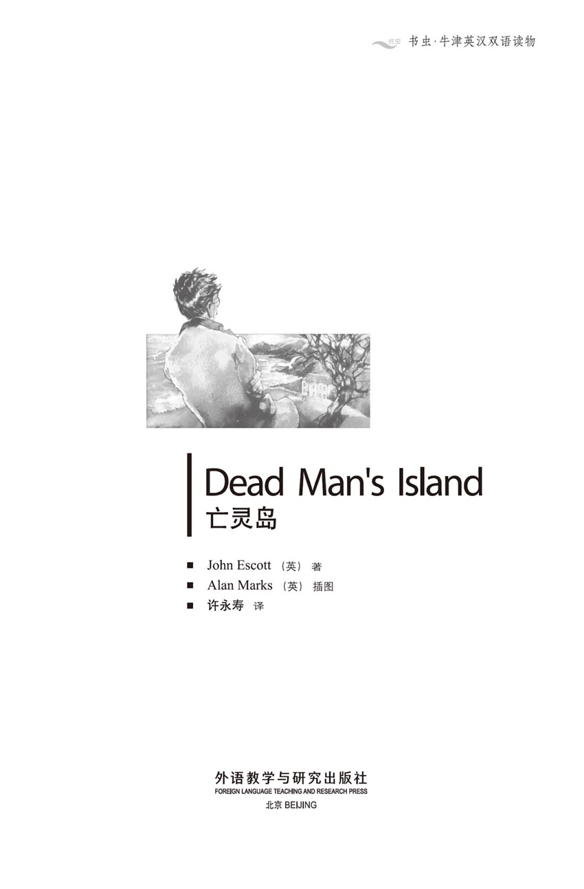
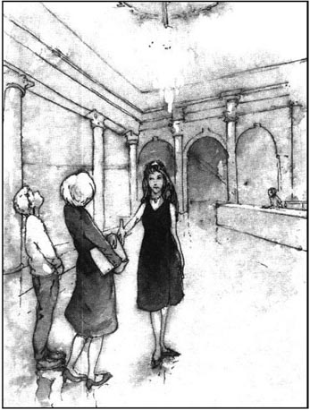
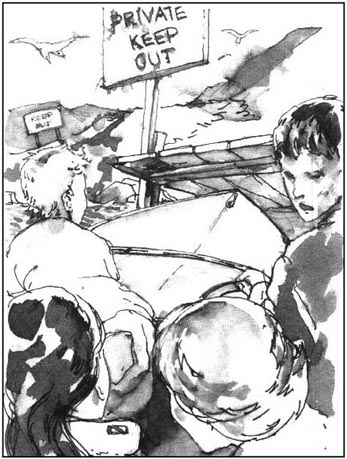
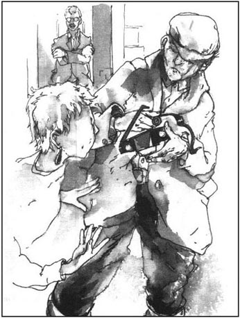
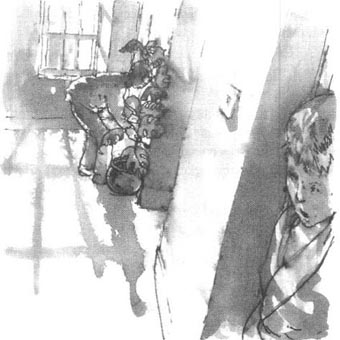
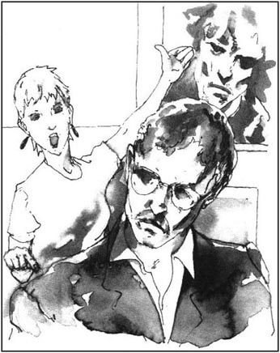
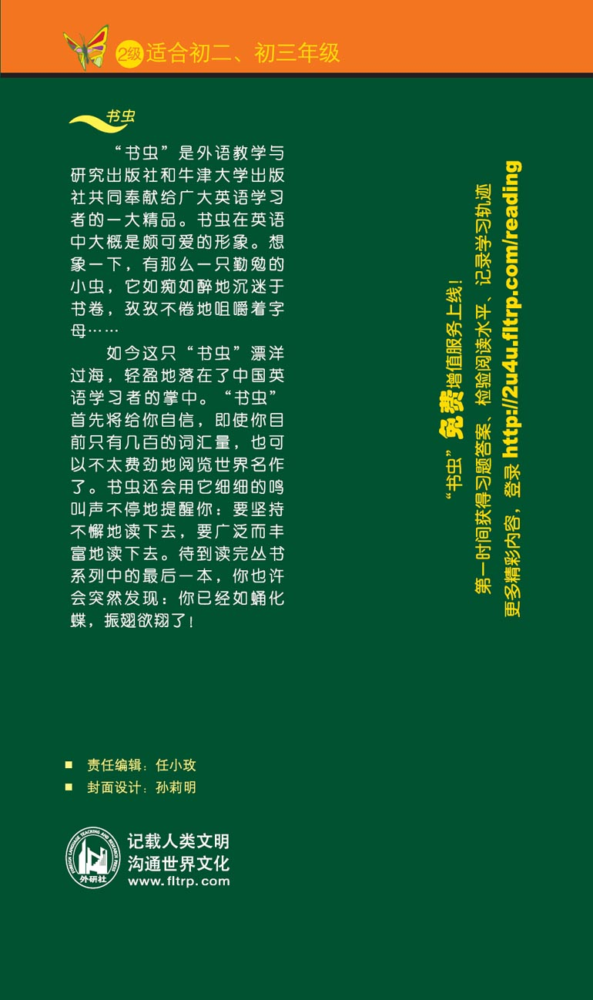

扉页

版权页
京权图字 01-97-0332
Published by arrangement with Oxford University Press for sale in the People's Republic of China only and not for export therefrom
©Oxford University Press 1991
Oxford is a trademark of Oxford University Press
只限中华人民共和国境内销售，不包括香港特别行政区、澳门特别行政区及台湾省。不得出口。
图书在版编目（CIP）数据
亡灵岛／（英）埃斯科特（Escott, J.）著；许永寿译．—北京：外语教学与研究出版社，1998.6（2014.8 重印）
（书虫·牛津英汉双语读物）
书名原文：Dead Man's Island
ISBN 978-7-5600-1383-1
Ⅰ．亡… Ⅱ．①埃…②许… Ⅲ．①英语—语言读物②短篇小说—英国—现代 Ⅳ．H319.4：I
中国版本图书馆CIP数据核字（2007）第009182号
出版人： 蔡剑峰
责任编辑：任小玫
封面设计：孙莉明
出版发行：外语教学与研究出版社
社 址：北京市西三环北路19号（100089）
网 址：http://www.fltrp.com
版 次：1998年6月第1版
书 号：ISBN 978-7-5600-1383-1
凡侵权、盗版书籍线索，请联系我社法律事务部
举报电话：（010）88817519
电子邮箱：banquan@fltrp.com
法律顾问：立方律师事务所 刘旭东律师
中咨律师事务所 殷 斌律师
简介
简 介
一个人有了隐私又不想让别人知道时，我们就可以说他“衣橱里有具骷髅”。大部分人都做过一些不光彩的事，卡罗尔·桑德斯也不例外。她有具“衣橱里的骷髅”，不管走到哪儿都摆脱不了。这使她越来越沮丧。当然，这件不光彩的事正在慢慢地毁坏着她的生活。
后来她遇到一位更有隐私的人。他的隐私需要整个一个岛来遮掩。也许最有可能由卡罗尔发现他的隐私。但是如果她想探明他的隐私，他会怎么样呢？他会乐意把他的隐私告诉她吗？或者他会生气，非常生气吗？这全取决于他藏在锁着的房间中的那具“衣橱里的骷髅”究竟是什么——而卡罗尔要打开那扇锁着的门。
本书作者约翰·埃斯科特是一位经验丰富的作家，现在英格兰南部的博恩默思生活和工作。
目录
1. Coming to England
1
Coming to England
My name is Carol Sanders.
I live in England now, but when I was younger, I lived in Hong Kong. My father was a businessman there and my mother worked as a secretary. We lived in Hong Kong for seven years.
I was happy at school, with lots of friends, and we had a good time. I liked pop music—the Rolling Stones, David Bowie and Jake Rosso were my favourites.
Jake Rosso was my favourite singer. He died in a car accident the year I left school, but I listened to his pop records all the time. I had hundreds of pictures and photos of him on my bedroom wall.
Then one day in winter when I was seventeen, things began to go wrong for me.
My father went to Australia on business. I loved him very much and didn't like him going away.
'Come home quickly,' I always said to him.
He was in Australia for two weeks. Then, on the day of his journey home, an aeroplane from Sydney crashed into the sea just south of Hong Kong. Everybody on the plane died.
I heard about the plane crash on television. At first, I did not think about my father. Then I remembered he was flying back from Sydney on that day.

'Oh, no!' I cried.
I telephoned the airport but they did not know the names of all the passengers then.
'Perhaps my father didn't get that plane,' I thought. 'Oh, please! Please!'
My mother was at work and I called her on the telephone. She came home quickly and we went to the airport and waited for news.
Later, we learned my father was on the plane.
'It's not true!' I shouted.
But it was true, and I began to cry.
I cried for weeks and weeks. I spent many days alone in my room. I was lonely and sad and I wanted to die, too.
I stopped going out with my friends. I didn't want to see other people. I stopped listening to Jake Rosso's records, and took his pictures off my bedroom wall. I didn't listen to music or watch television. Nothing mattered any more.
Then I stopped crying. I stopped feeling sad and began to feel angry.
'Why did it happen to him?' I asked my mother. 'Why do the best people die? Jake Rosso. My father.'
'I... I don't know, Carol,' my mother said. She was unhappy, too.
At the time of the plane crash, I was a student at college. I enjoyed the work and college life very much, but after my father's death I stopped doing my work at the college. I began to go out with some new friends. They were different from my other friends, and my mother didn't like them.
'They're bad people, Carol,' she told me. 'They do dangerous things.'
'They're exciting,' I said. 'And I like them.'
I knew she was angry but I didn't care. But then I learned my new friends took drugs, and I began to take drugs, too. It was wrong and stupid, I know that now, but I was unhappy and angry.
The police came to the college to arrest some of the students. They didn't arrest me, but I had to leave the college. It was a bad time.
My mother was very unhappy with me. 'What am I going to do with you, Carol?' she said.
'I'm sorry,' I told her.
'We'll go back to England,' she said. 'You can find a college there. Perhaps you can be happier in England.'
'All right,' I said. 'I want to forget what's happened. I want to forget what I've done and begin a new life, be a new person.'
A month later, we came back to England. We lived in London, in a hotel. It was strange, at first, with all the red buses and everybody speaking English. It was the beginning of the summer, three months before college began in the autumn. London was full of tourists.
We looked at all the famous buildings — Buckingham Palace, the Tower of London. And we went to restaurants and theatres in the evenings. It was interesting and exciting and I began to forget the bad times in Hong Kong.
'I'm pleased we came to London,' I told my mother.
But after a few weeks, she said, 'You need to find a college, Carol. You must go on studying. And I need a job.'
That evening, we looked in the newspapers.
'What about this?' I said. I showed my mother a job in the newspaper.
SECRETARY
for the summer months
on a small private island in Scotland.
Live with the family in a big house.
Interesting work and good pay
for the right person.
Phone Greta Ross. Telephone number 071...
'Well, that sounds interesting,' said my mother. 'I'd like to work as a secretary on an island in Scotland. It's a beautiful country, Carol, and you can go to a college there in the autumn.'
'And it's a place to live for the summer,' I said. 'Hotels are expensive.'
My mother telephoned Greta Ross.
'Come and see me tomorrow,' Greta Ross told her. 'Come to Savoy Hotel at eleven o'clock.'
I went to Savoy Hotel with my mother. It was big and expensive, bigger than our hotel, and in the centre of London.
'Mum needs this job,' I thought. 'And a private island in Scotland is a nice place to live. Perhaps I can forget what's happened if I go there.'
'Room twenty-two,' said the woman at the hotel desk. 'Go on up. Mrs Ross will see you now.'
Greta Ross was waiting for us. She was about thirty years old and very beautiful. She wore an expensive red dress and her hair was very long and dark.
'This is my daughter, Carol,' said my mother.
'Hallo, Carol,' said Greta Ross.
'Hallo,' I said.
'Carol is eighteen years old,' said my mother. 'Can she come with me, if I get the job? Perhaps she can help in the house or in the gardens. She likes gardening. She's studying farming at college.'
'Perhaps,' said Greta Ross. 'There's a small farm on the island.'
'I'd like to work on the farm,' I said.
Greta Ross looked at my mother. 'How long did you live in Hong Kong, Mrs Sanders?'
'Seven years,' answered my mother. 'My husband died in a plane crash last year, so we've come back to live in England.'
'where did you live before Hong Kong?'
'We lived in India for three years.'
Then Greta Ross took my mother into a room and asked her more questions. I waited outside.
'Greta Ross is nice,' I thought. 'I hope my mother gets the job.'
Soon after, the door opened and my mother came out. She was smiling.
Greta Ross said, 'Please wait here for a minute, Mrs Sanders. I want to make a phone call.' She went back into the room, and closed the door.
I was sitting on a chair near the door, and I could just hear Greta Ross's voice speaking on the phone.
'I think I've found someone,' she was saying. 'She has a daughter, but the girl can work in the garden or on the farm... Don't worry, they've been away from England for ten years... It'll be all right, I tell you... Don't worry.'
After a few minutes, Greta Ross put down the phone and came out of the room.
'You've got the job,' she told my mother.
My mother was pleased. 'Thank you,' she replied.
I was pleased, too, but now I was worried about that phone call. I didn't understand it.
pop music 流行音乐。
favourite n. 最喜爱的人或物。
accident n. something, esp. something unpleasant that happens by chance. 事故；横祸；灾难。
record n. 唱片。
crash v. (cause to) have a sudden and noisy accident. 使（飞机）坠毁；（汽车）碰撞；n. a voilent accident.（飞机的）坠毁；（汽车的）碰撞。
passenger n. a person travelling in a bus, boat or plane. 乘客；旅客。
(be) at work (be) doing something, esp. working. 在工作；在上班。
alone adv. & adj. without others. 独自；单独地（的）。
lonely adj. alone; without people. 寂寞的；孤独的。
different from unlike; not of the same kind. 与……不一样；与……不同。
care v. feel interest, anxiety or sorrow. 在乎；（为……）操心或忧虑。
drug n. 毒品。
arrest v. (the police) catch someone and take him to prison. 逮捕。
full of having plenty (of). 充满……（的）。
tourist n. a person visiting places for pleasure. 游客。
Buckingham Palace 白金汉宫[英国王宫]。
the Tower of London 伦敦塔。
private adj. for one person or a small number of people only. 私人的。
dark adj. (of the skin, etc.) not fair, nearer black than white. （肤色等）深色的；黑色的。
worry v. be anxious, uneasy. troubled. 焦虑；不安；烦恼；担心。
来到英格兰
1 来到英格兰
我叫卡罗尔·桑德斯。
我现在住在英格兰，但我年轻时住在香港。我父亲在那儿经商而我母亲是个秘书。我们在香港住了七年。
我在学校很快乐，有许多朋友；我们玩得很愉快。我喜欢流行音乐——滚石乐队、戴维·鲍伊和杰克·罗索是我的至爱。
杰克·罗索是我最喜欢的歌手。我离校那年他死于一次车祸，但我一直在听他的流行歌曲唱片。我在我卧室的墙上贴了成百上千张有关他的画片和照片。
接着在我17岁那年冬季的一天，事情对我来说开始变糟了。
我父亲去澳大利亚出差。我非常爱他，不愿意让他离家在外。
“快点回家来，”我总是对他说。
他在澳大利亚待了两周。接着，在他要回程的那天，一架从悉尼起飞的飞机坠入香港正南部的海域。机上人员全部遇难。
我从电视上听到飞机失事的消息。起初，我并没有想到我父亲。后来，我想起来那天他正从悉尼乘机返回。
“啊，不！”我叫了起来。
我给机场打电话，但他们那时还不知道所有乘客的名字。
“或许我父亲没乘那架飞机。”我想，“啊，千万别乘！千万别乘那架飞机！”
我母亲当时正在上班，于是我给她打了电话。她很快回家；我们去机场并等待消息。
后来，我们得知我父亲正在那架飞机上。
“这不是真的！”我喊道。
但这是真的，我哭了起来。
我哭了好几个星期。好多天我独自一人待在房间里。我既孤独又伤心，我也想过去死。
我不再和朋友们出去玩了。我不想见别人。我不再听杰克·罗索的唱片了，还把他的图片从我卧室的墙上取了下来。我不听音乐了，也不看电视了。一切对我都不再要紧了。
后来我不哭了。我不再伤心了，而开始感到愤怒了。
“为什么这事让他碰上了呢？”我问妈妈，“为什么总是最好的人死呢？杰克·罗索。我爸爸。”
“我……我不知道，卡罗尔。”我妈妈说。她也不愉快。
飞机失事的时候，我正是个大学生。我当时很喜欢大学的学习和生活，但我父亲去世后我在大学不学习了。我开始和一些新结识的朋友出去玩。他们和我的其他朋友不一样，而且我妈妈不喜欢他们。
“他们不是正经人，卡罗尔。”她告诉我，“他们在干一些危险的事情。”
“他们令人感到兴奋。”我说，“而且我喜欢他们。”
我知道她生气了，可我不在乎。后来我得知我新结识的朋友们在吸毒，我也开始吸毒了。我现在知道那样做既错又蠢，可那时候我心情郁闷。
警察来大学抓了一些学生。他们没抓我，可我不得不离开那个大学。那段日子可真糟糕。
我妈妈对我很不高兴。“我拿你可怎么办呢，卡罗尔？”她说。
“对不起，”我告诉她说。
“我们回英格兰吧。”她说，“在那儿你可以找所大学上。在英格兰也许你会高兴些。”
“好吧。”我说，“我想把过去发生的事忘掉。我想把我所干的事忘掉，开始新生活，成为一个新人。”
一个月后，我们回到了英格兰。我们住在伦敦，待在一家饭店里。起初，一切都很新奇：公共汽车是红色的，人人都说英语。时值初夏，离秋季开学还有三个月。伦敦到处都是观光客。
我们参观了所有著名的建筑物——白金汉宫、伦敦塔。而且晚上我们去餐馆和剧院。这令人感兴趣、令人激动，我开始忘掉在香港的那些令人难受的时光。
“我真为我们来到了伦敦而高兴，”我对妈妈说。
但是过了几周之后，她说：“你得找所大学上，卡罗尔。你必须继续你的学业。我也需要个工作。”
那天傍晚，我们翻看了一下报纸。
“这工作怎么样？”我说。我给妈妈看了看报上登的一条招工消息。
招聘秘书启事
苏格兰一私人小岛上
夏季招聘秘书一名。
可与主人一家共享宽裕住所。
工作有趣，薪金丰厚，
诚聘合适人选。
有意者请与格里塔·罗斯联系。电话：071……
“嗯，听起来挺有意思的。”我妈妈说，“我愿意在苏格兰的一个岛上干秘书工作。那是个很美丽的地方，卡罗尔，而且你秋季可以在那儿上大学。”
“夏季也可以在那儿过。”我说，“饭店很费钱。”
我妈妈打电话给格里塔·罗斯。
“明天来见我吧。”格里塔·罗斯告诉她，“11点请到萨沃伊饭店来。”
我和妈妈一起去了萨沃伊饭店。这个饭店既大又贵，比我们住的饭店大，并位于伦敦的中心。
“妈妈需要这个工作。”我想，“而且苏格兰的一座私人岛屿还是个生活的好地方。我如果去那儿，也许就可以把过去发生的事情忘掉。”
“22号房间。”饭店服务台的女士说，“上楼去吧。罗斯夫人现在就可以接见您。”
格里塔·罗斯正等着我们。她大约30岁，很漂亮。她穿着一件很贵的红色连衣裙，头发很长很黑。
“这是我女儿卡罗尔，”我妈妈说。
“你好，卡罗尔。”格里塔·罗斯说。
“您好，”我说。
“卡罗尔18岁了。”我妈妈说，“如果我能得到这份工作，她可以跟着我吗？也许她能帮助做些家务活或干些园子里的活。她喜欢园艺。她正在大学学农业。”
“也许行吧。”格里塔·罗斯说，“岛上有个小农场。”
“我喜欢在农场里干活，”我说。
格里塔·罗斯看了看我母亲。“你们在香港住了多久，桑德斯夫人？”
“七年。”我妈妈说，“我丈夫去年因飞机失事去世了，所以我们回英格兰来住了。”
“住在香港之前你们待在哪儿？”
“我们在印度住了三年。”
然后格里塔·罗斯带我妈妈进了一个房间，又问了她一些问题。我在外边等着。
“格里塔·罗斯挺好的。”我想，“我希望妈妈能得到这份工作。”
过了不一会儿门开了，我妈妈出来了。她微笑着。
格里塔·罗斯说：“请在这儿等一会儿，桑德斯夫人。我想去打个电话。”她返回房间，并关上了门。
我坐在门旁的一把椅子上，正好能听到格里塔·罗斯打电话的声音。
“我想我已经找到了一个人。”她正在说，“她有个女儿，但这个女孩可以在园子或在农场干些活儿……别担心，她们离开英格兰已有10年了……不会出事的，我告诉你……别担心。”
过了一会儿，格里塔·罗斯挂上了电话并从屋里出来了。
“你得到了这份工作，”她告诉我妈妈说。
我妈妈很高兴。“谢谢您，”她说。
我也很高兴，可现在我对那个电话感到忧虑不安。我不明白它的意思。
2. The Island
2
The Island
We went to Scotland the next day, first by plane, then by train. Greta Ross travelled with us.
I looked out of the train window and saw fields and villages and mountains. 'Mum is right,' I thought. 'Scotland is a very beautiful place.'
'You're going to be my husband's secretary,' Greta Ross told my mother. 'He's a businessman, but he never leaves the island. He does all his work by telephone and letter and computer. He invests money in companies, all over the world.'
'Do many people live on the island?' I asked.
'Not many,' said Greta Ross. 'You'll meet them soon.'
'Greta Ross is young,' I thought. 'Is her husband young, too? How can a young man buy an island? Is he very rich?'
After the train, we went on Mr Ross's boat, which took us out to the island. The boatman was a young man. He had dark hair and was brown from the sun.
'This is Tony,' said Greta Ross. 'He works for Mr Ross.'
'Hi,' said Tony.
Soon we were near the island. I could see the beaches and the cliffs. The boat slowed down.
'There are dangerous rocks around the island,' explained Tony. 'A lot of them are under the water and you can't see them. I have to be careful. But the rocks keep other boats away, and that pleases Mr Ross.'

'Why?' I asked.
Tony looked at Greta Ross but she wasn't listening. 'Mr Ross doesn't like visitors to the island,' Tony said in a quiet voice.
Then Greta Ross looked at us and Tony said no more.
'Why doesn't Mr Ross like visitors?' I thought. 'Has he something to hide?'
When we arrived on the island, my mother and I followed Greta up to the house. It was very big and there were trees all around it.
A woman was waiting inside the house.
'This is Mrs Duncan, Tony's mother,' said Greta. 'She's the housekeeper and her husband is the gardener. Mrs Duncan will take you up to your rooms. I'm going to tell Mr Ross you've arrived.'
The housekeeper was a little woman with short hair. She went up the stairs, and my mother and I went after her.
My room was next to my mother's. I looked out of the window and saw the garden at the back of the house. A man was working in the garden, near some trees. 'Is that Mr Duncan?' I thought. I looked between the trees and saw the sea. 'It's a beautiful house and a beautiful island.'
That evening, we had dinner with Mr and Mrs Duncan and Tony. We ate in the big kitchen.
'What happened to Mr Ross's last secretary?' asked my mother.
'She's in hospital,' replied Mrs Duncan. 'She's going to be away all summer.'
'Isn't Mrs Ross lonely here?' I said.
'No,' said Mrs Duncan. 'She likes painting a lot. She has a room upstairs and goes there to paint. She's very good. Sometimes she goes to different places on the island to paint pictures.'
We finished eating our meal. Soon after, Greta Ross came into the kitchen.
'Mr Ross wants to see you and your daughter now, Mrs Sanders,' she said. 'Follow me, please.'
We followed her through the house and into a big room. This was Mr Ross's office and he was sitting behind a desk.
I was surprised. He was a young man, about thirty. He had a moustache, short dark hair, and he wore glasses.
Mr Ross was speaking into the telephone. 'Who does he look like?' I thought. 'Is it Tony Duncan?'
'Mr Ross is talking to a business friend in New York,' said Greta. 'Please, sit down.'
While we waited, I looked around the office. There were three telephones, a computer, and lots of books and papers.
There was another door and I could see a smaller room, next to the office. There was a smaller desk and another computer in there.
Mr Ross finished speaking on the phone, then looked carefully at my mother and me. For a few seconds he didn't speak, and just watched us. Then he said, 'I'm pleased to meet you, Mrs Sanders. I need some help with my work. My secretary is in hospital, and there's a lot of work to do. Sometimes you'll have to work late at night, because of time differences in New York and Tokyo. Is that all right?'
'Yes, that's all right,' said my mother.
'Can you use a computer?'
'Yes.'
'Good.' He looked at me. 'Is this your daughter?'
'Yes, this is Carol,' said my mother.
'Hallo,' I said.
'Greta says you like gardening. There's a big garden here, so you can help Mr Duncan. And there's a farm. Dan and Stella Parks live in the farmhouse and work on the farm. You can help them, too. We have some animals. Some sheep, a few cows and chickens. And there's a horse called Smoke. He's grey, like his name. Can you ride?'
'Yes,' I said. 'I can ride a horse.'
'You can ride Smoke around the island, if you like.'
'I'd like that,' I said. 'Thank you.'
'And we grow vegetables and fruit,' he said. 'I work on the farm sometimes. I enjoy it.'
I smiled at him but he didn't smile back.
'Carol will enjoy working on the farm,' said my mother. 'Won't you, Carol?'
'Yes,' I said.
'Mr Ross looks sad,' I thought. 'But how did he get all his money? And why does he hideaway on an island?'
computer n. 电脑；计算机。
invest v. put money into a business and get more money back later. 投资。
beach n. seashore. 海滩。
cliff n. the high, sharp side of a hill. 峭壁。
rock n. very big piece of stone. 岩石。
you pron. (impersonal) one, anyone. （口语中可为无人称代词）一个人；任何人。
keep… away prevent ... from reaching. 使……不能靠近。
housekeeper n. person who looks after a house. 管家。
paint v. make a picture with colours. 画。
moustache n. the hair on a man's top lip. （上唇上的）胡子。
glasses n. round pieces of glass that you wear over the eyes to see better. 眼镜。
next to in the closest place to. 紧挨着。
Tokyo n. 东京[日本首都]。
岛屿
2 岛屿
第二天我们就去了苏格兰，先乘飞机，后乘火车。格里塔·罗斯与我们同行。
我从火车车厢的窗子向外望去，看到了田野、村庄和群山。“妈妈说得对，”我想，“苏格兰是个非常漂亮的地方。”
“你就要当我丈夫的秘书了。”格里塔·罗斯告诉我妈妈说，“他是个商人，但他从来不离开这个岛。他通过电话、信函和电脑来干他所有的工作。他向遍布世界各地的公司投资。”
“许多人住在岛上吗？”我问。
“不多。”格里塔·罗斯说，“不一会儿你就能见到他们了。”
“格里塔·罗斯年轻。”我想，“她丈夫也年轻吗？一个年轻人怎么能买得起一座岛屿呢？他很有钱吗？”
下了火车，我们上了罗斯先生的船，那船带着我们出海向岛驶去。船夫是个年轻人。他长着一头黑发，皮肤晒成了棕色。
“这是托尼。”格里塔·罗斯说，“他为罗斯先生工作。”
“你好，”托尼说。
不久我们就离这个岛近了。我能看到海滩和峭壁了。船慢了下来。
“岛的四周都是危险的礁石。”托尼解释道，“许多礁石在水下，人看不见。我得很小心。但这些礁石使别的船不能靠近这个岛，那使罗斯先生感到很高兴。”
“为什么？”我问道。
托尼看了一下格里塔·罗斯，但她没在听我们说些什么。“罗斯先生不喜欢客人到岛上来，”托尼轻声说。
接着，格里塔·罗斯看了看我们，托尼便没再说什么。
“为什么罗斯先生不喜欢客人呢？”我寻思着。“难道他有什么事要遮遮掩掩吗？”
我们到了岛上之后，我和我妈妈随格里塔来到了那幢房子。它很大，四周都是树。
一个女人正在房子里等着我们。
“这是邓肯太太，托尼的母亲。”格里塔说，“她是女管家，她丈夫是园丁。邓肯太太将带你们上楼去你们住的房间。我去告诉罗斯先生你们已经到了。”
管家是个留着短发的小妇人。她上了楼，我和我妈妈随后跟着她。
我的房间就在我妈妈房间的隔壁。从窗子向外望去，我看到了房后的园子。有个人正在园子里干活，那儿旁边有些树。“那就是邓肯先生吧？”我想。我透过树林，看到了大海。“这房子漂亮，这岛也漂亮。”
那天傍晚，我们与邓肯夫妇和托尼一起进餐。我们在大厨房吃饭。
“罗斯先生的上任秘书发生了什么事？”我妈妈问道。
“她住院了。”邓肯太太回答说，“整个夏季她都将不在。”
“罗斯夫人在这儿不寂寞吗？”我说道。
“不寂寞。”邓肯太太说，“她非常喜欢画画。她楼上有个房间，她常去那儿画画。她这个人很好。有时她去岛上不同的地方画画。”
我们吃完了饭。不久之后格里塔·罗斯来到了厨房。
“罗斯先生现在想见见你和你的女儿，桑德斯夫人。”她说，“请跟我来。”
我们跟着她穿过房子来到一个大房间里。这是罗斯先生的办公室，他正坐在办公桌的后面。
我很惊讶。他是个年轻人，大约30岁。他留着胡子，长着黑色短发，并戴着眼镜。
罗斯先生正在打电话。“他看上去像谁呢？”我想。“像托尼·邓肯？”
“罗斯先生正在与纽约的一位商界朋友通话。”格里塔说，“请坐下吧。”
我们等着的时候，我打量了一下这间办公室。屋里有三部电话、一台电脑以及许多书本和文件。
办公室还有一个门，所以我可以看到紧挨着办公室的一个小一些的房间。那里面有一张小一些的办公桌，另有一台电脑。
罗斯先生打完了电话，然后仔细地看了看我妈妈和我。有那么片刻他默默不语，只是在打量我们。然后他说：“见到你们很高兴，桑德斯夫人。我需要人帮助处理我的工作。我的秘书正在住院，有许多事情要处理。由于纽约和东京都有时差问题，有时候你得在深夜工作。你看行吗？”
“行，那没什么。”我妈妈说。
“你会用电脑吗？”
“会用。”
“那很好。”他看了看我。“这是你女儿吗？”
“是，这是卡罗尔。”我妈妈说。
“您好，”我说。
“格里塔说你喜欢园艺。这里有个大园子，所以你可以给邓肯先生帮帮忙。这里还有个农场。丹·帕克斯和斯特拉·帕克斯住在农舍里并在农场干活。你也可以给他们帮帮忙。我们养了些动物。一些羊、几头牛和数只小母鸡。还有一匹叫'烟'的马。这匹公马是灰色的，跟它的名字一样。你会骑马吗？”
“会骑，”我说，“我会骑马。”
“如果你喜欢，你可以骑着'烟'在岛上转转。”
“那太好了。”我说，“谢谢您。”
“我们还种了蔬菜和水果。”他说，“我有时在农场里干些活。我喜欢干农活。”
我朝他笑了笑，可他没回敬我的笑。
“卡罗尔会喜欢在农场干活的。”我妈妈说，“是不是，卡罗尔？”
“是的，”我说。
“罗斯先生显得有些忧伤。”我想，“但是他怎么会有那么多钱呢？而且为什么他要隐匿在一个岛上呢？”
3. The Photograph
3
The Photograph
I worked in the garden for the first two days. The weather was hot and sunny. I liked working with Mr Duncan, and he was pleased with my work.
'You're a good gardener,' he said.
'I've always liked gardening,' I said. 'But I'm studying at college to be a farmer.'
Sometimes I saw Greta Ross.
'She likes to be alone,' I thought. Once or twice I saw Greta go out with her painting things. She went up on the hills or down to the beach.
Mr Duncan took me to the farm and I met Dan and Stella Parks. They were very friendly.
'You can work on the farm for the next three days,' said Dan Parks. 'Mr Duncan says you're a good gardener. Are you a good farmer, too?'
I smiled at him. 'I am,' I said.
He smiled back.
So I worked on the farm with Mr and Mrs Parks. They were nice people. I helped with the cows and the chickens, and went up on the hills with Mr Parks and his dog to look after the sheep.
One afternoon I went out riding. Smoke was a big, lazy, friendly horse. I enjoyed riding and Smoke knew his way around the island very well. I learned new places to go to.

I rode along the cliff top and then in between some trees. When we came out of the trees, I saw the house from the other side. I tried to find the window of my room. Which one was it?
Suddenly, I saw a face at one of the windows. The face was looking at me. It was there for just a second or two, then it moved away quickly.
'Who was that?' I thought. 'Was it Mr Ross? And which room was it?'
I didn't see my mother very much that first week. She worked all day and in the evenings. She wrote letters to South America, Japan, Canada and Australia. Sometimes, she worked after I was in bed.
'Mr Ross works hard,' she told me. 'He invests money in many companies and countries. But it's not his money.'
'It's not?' I was surprised by this.
'No, it's his wife's money. And she bought the island. It's her island, her house, her farm. Everything belongs to her.'
'How strange! But why does Mr Ross always look sad? And why does he never leave the island?' I asked.
'I don't know,' said my mohter. 'He says he likes it here and likes working on his farm. It's strange, I know.'
Sometimes, when I finished work, I walked along the beaches or the cliffs. Or I went swimming in the sea. I liked swimming. Greta Ross often came to the beach to swim, but Mr Ross never came.
'Stay away from the rocks, Carol,' Greta Ross told me. 'They're very dangerous.'
'I will,' I said.
Sometimes I took my camera to the beach and took photographs of some of the boats that went by. I took photographs of the birds on the cliffs.
There were other small islands near our island, and boats with tourists stopped at them. But no boats stopped at our island. They kept away from the dangerous rocks. Tony was right. The island did not have visitors.
One day, I was walking back to the house, and had my camera with me. I stopped and looked at the big house. Mr Duncan was working in the garden in front of it. At first, he didn't see me.
'I'm going to take a photograph of the house,' I thought. 'The sun is in just the right place, and it will make a good picture.'
I looked at the building through my camera, and took the photograph. Mr Ross was coming out of a door. He was in my picture, too, and he looked angry.
'That's all right,' I thought. 'It's still a good photograph.'
But Mr Duncan was running across the grass. He came quickly up to me and said, 'Give me your camera.' He looked very worried.
'What's wrong?' I asked in surprise. I gave him the camera.
'Never take photographs of Mr Ross,' he said. And then he opened the back of my camera and took out the film.
'Hey! What are you doing?' I said. 'You'll spoil my film!'
But he didn't stop. 'Sorry,' he said, and he put the film into his pocket. 'But no pictures of Mr Ross. He doesn't like people to take pictures of him.'
Mr Ross was watching us. He saw the camera and he saw Mr Duncan take out the film, but he said nothing. Then he turned and went back into the house.
Later, I told my mother about Mr Duncan and the camera. 'He spoiled my film,' I said.
'I don't understand,' she said. 'Why did he do that?'
'I don't. know,' I said, 'but there's something strange about Mr Ross.'
About a week later, I finished work early one day and came back to the house. My mother was working in her small room, next to Mr Ross's office. Mrs Duncan was in the kitchen. Greta Ross was painting in her room upstairs.
I went to my room and began reading a book. I was sitting beside the window. After half an hour, I got tired of reading. I looked out at the rain, and the grey sea and rocks between the trees.
'My book isn't very interesting,' I thought.
I got up and went out of my room. I walked along the passage and turned a corner. Then I saw the door at the end of the passage. There was a large plant in a plant pot outside the door.
'Where does that door go?' I thought. 'I haven't seen it before.' I remembered the face at the window in my first week on the island. 'Perhaps it's the door to that room,' I thought.
I walked along to the door and turned the handle. The door didn't move. It was locked.
'What are you doing?' said a voice behind me.
I turned round quickly and saw Greta Ross. She looked angry.
'That room is private,' she said.
'I'm sorry,' I said. 'I didn't—'
'Stay away from there,' she told me.
I told my mother about the locked door.
'What's behind it?' I said. 'Is it a secret?'
'I don't know,' said my mother. 'It doesn't matter. Mr Ross can have locked rooms if he wants them.'
'I think he does have secrets,' I said. 'There's something strange about him. There's something strange about this island. Somebody isn't telling us something. Something important.'
My mother laughed. 'Stop playing detective, Carol,' she said.
lazy adj. moving slowly, unwilling to work. 悠闲的；懒散的。
it pron. 它；性别不明或无关紧要的人（动）物。
camera n. machine used to take pictures. 照相机。
take photographs use a camera to take pictures. 照相；摄影。
film n. 胶卷。
spoil v. hurt or damage something so that it is useless or not good. 弄坏；毁坏。
get tired of be bored with. 对……感到厌烦。
passage n. narrow way in a building by which one goes to other rooms. 走廊。
plant n. anything (e.g. flower, tree) that is growing. 植物。
pot n. round container to put things in. 锅；盆。
handle n. the part of a door that you hold to open it. 门把手。
do v. 用以加重语气的助动词（需重读）。
detective n. person whose special job is to find out information that will make bad men be taken into prison. 侦探。
play detective（在游戏中） 模仿侦探调查案件。
照片
3 照片
头两天我在园子里干活。天气晴朗而炎热。我很喜欢与邓肯先生一块儿干活，他对我干的活也很满意。
“你是个好园丁。”他说。
“我一向喜欢园艺。”我说，“但我现在正上大学，以便当个农夫。”
我有时见到格里塔·罗斯。
“她喜欢一个人独处。”我想。有一两次我看见格里塔带着画具出去了。她到山上或到海滩去。
邓肯先生带我到农场去，我见到了丹·帕克斯和斯特拉·帕克斯。他们非常友好。
“接下来的这三天你可以在农场干活。”丹·帕克斯说，“邓肯先生说你是个好园丁。你也是个好农夫吗？”
我朝他笑了笑。“是的。”我说。
他回笑了笑。
这样我就和帕克斯夫妇一起在农场干活了。他们是好人。我帮着照看奶牛和小母鸡，还和帕克斯先生及他的狗一起上山去照看羊群。
一天下午，我骑马出去。“烟”是一匹懒散而友善的大马。我喜欢骑马，“烟”对岛上的路很熟。我知道了些新的去处。
我骑马沿着峭壁顶部走，然后在树林中间穿行。当我们从树林中出来时，我看到了那幢房子的另一面。我想找出我房间的窗子。是哪一扇呢？
突然我看见一扇窗子旁有一张脸。那人正看着我。那人只在那儿待了一瞬间，接着很快就离开了。
“那是谁？”我想，“是罗斯先生吗？又是哪个房间呢？”
第一个星期我没怎么见到妈妈。她整个白天还有晚上都在工作。她给南美、日本、加拿大和澳大利亚写信。有时我睡了之后她还在工作。
“罗斯先生工作很努力。”她告诉我，“他给很多公司和国家投资。可那不是他的钱。”
“不是他的钱？”对此我很惊讶。
“不是他的，是他妻子的钱。并且是她买了这个岛。这是她的岛屿，她的房子，她的农场。所有的东西都属于她。”
“多奇怪呀！可为什么罗斯先生总显得那么忧郁呢？为什么他从不离开这个岛呢？”我问道。
“我不知道。”妈妈说，“他说他喜欢这儿，喜欢在他的农场里干活。我知道，这的确有点儿怪。”
有时干完活以后，我就沿着海滩或峭壁散步，或者去海里游泳。我喜欢游泳。格里塔·罗斯常到海边去游泳，但罗斯先生从来不去。
“离礁石远些，卡罗尔。”格里塔·罗斯告诉我，“它们很危险。”
“好吧。”我说。
有时我将照相机带到海边，照照过往的船只，照照峭壁上的鸟儿。
我们这个岛附近还有些其他的小岛，载着旅客的游船停靠在那里。但没有船在我们这个岛边停靠。船只都远离那些危险的礁石。托尼说的对，这个岛上没有客人来。
有一天，我正朝房子走回去，随身带着照相机。我停下来，看着这幢大房子。邓肯先生正在房子前面的园子里干活。起初，他没看见我。
“我来给这幢房子拍一个照吧。”我想，“太阳正在合适的位置，拍出来会挺不错的。”
我把镜头对准了房子，拍了一张。罗斯先生正好从门里出来。他也被拍了进来，他看上去一副生气的样子。
“那也没什么。”我想，“仍然是张好照片。”
但邓肯先生从草地上跑过来。他很快跑到我跟前说：“把相机给我。”他看起来很着急。
“怎么了？”我惊奇地问道。我把相机交给了他。
“决不许给罗斯先生拍照，”他说。然后他打开相机后盖，把胶卷取出来。
“嘿！你干什么呀？”我说，“你会毁了我的胶卷的！”
可他不停手。“对不起，”他说，并把胶卷装进了他自己的衣袋里。“可不许给罗斯先生拍照。他不喜欢别人给他照相。”
罗斯先生正看着我们。他看见了照相机，也看见了邓肯先生把胶卷取出来的过程，可是他什么也没说。然后他转过身就回到房子里去了。
过后，我把邓肯先生和照相机的事情告诉了妈妈。“他毁了我的胶卷。”我说。
“我不明白。”她说，“他为什么要那样做呢？”
“我不知道。”我说，“可罗斯先生这个人真有点儿古怪。”
大约一周之后，有一天我很早就干完活儿，回房子里去了。我母亲正在罗斯先生办公室旁边的她那个小房间里工作。邓肯太太在厨房。格里塔·罗斯在楼上她的房间里画画。
我去了自己的房间，开始读书。我坐在窗子旁。半个小时后，我读腻了。我向外望去，看外面的雨，看隐蔽在树木之间的灰蒙蒙的大海和岩石。
“我的书不很有趣。”我想。
我站起来走出房间。我顺着走廊走，拐了一个弯。然后我看见走廊尽头有一扇门。门外的花盆里有一株很大的植物。
“这门通哪儿呢？”我想。“我先前没见过它。”我记起了我到岛上的第一周看到的、那扇窗子旁的那张脸。“可能这就是通向那个房间的那扇门，”我想。
我一直走到房门前，转了转门把手。门没动，是锁着的。
“你在干什么？”身后有人问我。
我赶紧转过脸，看到了格里塔·罗斯。她显得生气了。
“那是私人专用房间。”她说。
“对不起。”我说，“我不——”
“离那儿远点。”她对我说。
我把那扇锁着的门的事情告诉了我妈妈。
“那扇门后有什么？”我说，“是秘密吗？”
“我不知道。”我妈妈说，“那没什么关系。罗斯先生要是想的话，当然可以有锁起来的房间。”
“我想他一定有秘密。”我说，“他这个人有些古怪。这座岛有些奇怪。有人有什么事情瞒着咱们。是重要的事情。”
我妈妈笑了。“别玩侦探游戏了，卡罗尔。”她说。
4. The Locked Room
4
The Locked Room
Two days later there was a storm in the middle of the night.
I was hot and I couldn't sleep. I got out of bed, went across to the window and looked out at the night. Black clouds hurried across the sky, and the trees moved wildly in the wind. The rain made a loud noise on the window.
I opened my window and put my head out into the wind and the rain. I looked at the other windows in the house. Most of them were dark. But one window had a light in it. 'Somebody isn't sleeping,' I thought. 'Which room is that?'
There were six windows between my window and the room with the light.
'And there are six doors between my room and the locked door!' I thought. 'That light is in the locked room. Somebody's in there!'
I put on my dressing-gown and went out of my room. The house was dark, and at first I couldn't see very well. I walked along the passage and turned the corner.
There it was, the locked room. And there was a light under the door !
I went nearer and heard noises.
'Somebody's moving about in the locked room,' I thought. 'Who is it?'

Then the light went off and the door opened.
I was afraid to move.
Somebody came out of the room, and into the dark passage. Lightning suddenly lit up the house, and I saw who it was.
'It's Mr Ross!' I thought. 'What was he doing in that room in the middle of the night?'
I didn't move and he didn't see me. He locked the door of the room carefully. He didn't put the key in his pocket, but hid it in the plant pot next to the door.
'He's coming along here,' I thought. 'I must get back to my room.'
And I ran back along the passage.
Mr Ross heard me. 'Who's that?' he called.
I didn't answer, but ran into my room and closed the door.
He came along the passage and stopped outside my door. Then he walked past and went on down the stairs.
I took off my dressing-gown and went back to bed. I was shaking because I was afraid.
'Now I know how to get into the locked room,' I thought. 'But what's in there?'
There was no storm in the morning, but it was still raining. I got up early and worked on the farm. There were eggs from the chickens and I put them in boxes. I helped to milk the cows and then took them out to the field.
Later, I went back into the house for breakfast. 'Did you sleep all right last night?' asked Mrs Duncan. 'Or did the storm wake you up?'
'I... slept all right,' I said. I didn't want to tell her about the light in the locked room, or about Mr Ross.
After breakfast, I went back upstairs. Mr Ross was talking on the telephone in his office. My mother was working at her desk. I knew that Mrs Duncan was in the kitchen and that Mr Duncan was working in the garden.
'Where's Mrs Ross?' I thought.
Then I looked out of the window and saw her with Tony Duncan. They were walking to the boat.
'He's taking her out in the boat,' I thought. 'Perhaps she's going to Edinburgh.'
The boat moved away from the island and I waited until it was out at sea. Then I opened the door of my room.
There was nobody in the passage and I ran along to the locked room. The key was still in the plant pot and I took it out. My hand was shaking.
Then I unlocked the door.
put on wear or place (something) on the body. 穿上。
dressing-gown n. long, loose garment over night clothes. 晨衣。
go off (of light) stop shining. 关（灯）；熄（灯）。
lightning n. sudden, very bright light in the sky during a storm. 闪电。
light up make or become bright. 照亮。
take off remove (a garment). 脱下；脱去。
get into enter. 进入。
milk v. take juice from (a cow). 挤牛奶。
wake up (cause to) cease to sleep. 吵醒。
Edinburgh n. 爱丁堡[苏格兰首府]。
unlock v. unfasten the lock of. 打开门锁。
锁着的房间
4 锁着的房间
两天后半夜里来了一场暴风雨。
我很热，睡不着。我下了床，走到窗边，望着窗外的夜色。乌云在天空中匆匆飘过，树在狂风中猛烈地摇摆。雨打在窗子上弄出了很大的响声。
我打开窗子，把头伸在风雨中。我看了看这幢房子的其他窗子。绝大部分窗子是黑的。但有一扇窗子里有灯光。“有人没睡。”我想，“那是哪个房间呢？”
我的窗子和那个亮着灯的房间之间隔六个窗子。
“而且我这个房间和锁着门的那个房间之间也隔六扇门！”我琢磨着。“那个亮着的灯就在那个锁着的房间里。那里面有人！”
我穿上晨衣，从我屋里走了出来。这座房子里很暗，起初我看得不怎么清楚。我顺着走廊走，拐了一个弯。
那儿就是那个锁着的房间。而且门下面露出了灯光！
我走近了些，听到了动静。
“有人在这个锁着的房间里走动。”我想。“是谁呢？”
接着灯熄了，门开了。
我没敢动。
一个人从屋里走出来，到了黑暗的走廊里。忽然一道闪电照亮了这幢房子，我看清了这个人是谁。
“是罗斯先生！”我想。“他半夜在那个房间里干什么呢？”
我没动，他也没看见我。他小心地锁上了门。他没把钥匙放入他的衣袋里，却把它藏在门旁的花盆里。
“他正往这儿来了。”我想，“我必须回我的房间去。”
于是我就顺着走廊往回跑。
罗斯先生听见我了。“谁？”他喊到。
我没回答，却跑进自己的房间，关上了门。
他顺着走廊过来了，在我的门外停了下来。然后他就走过去了，往前下了楼。
我脱下晨衣，回到了床上。我因害怕而直发抖。
“现在我知道怎么进入那锁着的房间了。”我想，“但那里有什么呢？”
早晨风暴停了，但雨还在下。我很早就起了床，在农场里干活。那儿有小母鸡下的一些蛋，我把蛋放在箱子里。我帮着给奶牛挤奶，然后把它们带到了外面的田野。
后来我回房子里去吃早饭。“昨天晚上睡得好吗？”邓肯太太问道。“还是暴风雨把你吵醒了？”
“我……睡得很好，”我说。我不想把锁着的那个房间里亮着灯的事或罗斯先生的事告诉她。
早饭后，我回到楼上。罗斯先生正在他的办公室里打电话。我妈妈正坐在她办公桌旁工作。我知道邓肯太太在厨房里而邓肯先生在园子里干活。
“罗斯夫人在哪儿呢？”我想。
接着我从窗子向外望去，看见她和托尼·邓肯在一起。他们正向一条船走去。
“他要用船送她出岛。”我想，“她可能去爱丁堡。”
船离开了这座岛；我一直等着，直到它出了海。然后我打开了我房间的门。
走廊里没有人，我跑到了那个锁着的房间前。钥匙还在花盆里，我把它拿了出来。我的手在颤抖。
然后我打开了门。
5. A Dead Man
5
A Dead Man
I went into the room... and I was very surprised.
The room was full of strange things. Coloured shirts and suits. Three guitars. And there were posters and photographs on the walls.
I looked at the posters.
Jake Rosso's face looked down at me.
I looked at the dead Jake Rosso's pictures, and I remembered all the photographs on the walls of my room in Hong Kong. I could never forget that face — the face of my favourite singer.
Then, while I looked at his face, something strange happened. I began to see another face in the posters. An older face, and with a moustache, but the same face.
I saw the face of Mr Ross.
'No!' I said. 'It's not true!'
But it was, I knew it was.
'Mr Ross is... Jake Rosso!'
'No!' said a voice behind me.
I turned round and saw Mr Ross. He was standing in the doorway. He looked... afraid.
'I don't believe you!' I said.
'You have to believe me!'
I looked at the posters. 'Who is that, if it's not you?'

'It's Jake Rosso. He was... my brother.'
'That's not true!' I shouted. 'I don't believe you. Listen, Jake Rosso was my favourite singer — I had hundreds of photos of him. I still have all his records. I loved him, do you understand? Thousands of people loved him.'
'He's dead,' Mr Ross said quietly.
'No!' I shouted. 'You're Jake Rosso! You look different now, yes. You've got short hair, you've got a moustache now, and you wear glasses. But you're ... Jake... Rosso. You were my favourite pop star, so I know.'
Mr Ross said nothing, and watched my face.
'He doesn't know what to do,' I thought. 'He knows I don't believe him, and he's afraid.'
Then he said, 'It was you in the passage last night, wasn't it?'
'Yes,' I answered.
He looked angry. 'I was wrong to give your mother a job,' he said. 'I thought it was OK because you came from Hong Kong. And I needed help with my work. I needed a good secretary.'
'Does your other secretary know who you are?' I asked. 'Do the other people on the island know?'
Mr Ross didn't answer, but walked across to the window. He was thinking.
'What's he going to do?' I thought.
Then he turned round. 'OK, you're right. I... I am Jake Rosso.'
'I knew it!'
He looked worried and unhappy. 'Can you keep a secret? A very important secret?'
I thought for a minute, then I said, 'Yes, I can keep a secret.'
Then he told me:
'The other people on this island are my family.'
'Your family?' I said.
'Yes. My real name is James Duncan, and Mr and Mrs Duncan are my father and mother. Tony is my younger brother, and his wife, Lisa, is my secretary. It's she who's in hospital.'
'And Stella and Dan Parks?' I asked.
'My mother's sister and her husband,' he said.
'But what are you doing here on this island? I don't understand.'
'I'll tell you,' he said. He sat down on a chair and took a guitar in his hands, but he didn't play it. 'You were right. I was a famous pop star. I was very rich, and I had a beautiful wife. But things went wrong.'
'How?'
'I took drugs,' he said. 'I drank a lot of alcohol. I got drunk and crashed cars. I did stupid, terrible things. I knew it was wrong but I couldn't stop doing it. I was... crazy, for a time.'
'I can understand that,' I told him. 'I've taken drugs, too.'
He looked surprised. 'You have?'
'Yes,' I said. 'After my father died, I was very unhappy and things went wrong for me too. But go on with your story.'
He went on. 'One night, I was driving my car. I was drunk and — and I hit somebody. A young girl. She... died. I killed her.'
'Oh, no!'
'Yes,' he said. 'She was fifteen years old. I wanted to die, too. The money didn't matter anymore. Nothing mattered anymore.'
'What did you do after the accident?' I asked.
'I drove on in the car. I didn't stop, and I didn't tell the police. I had killed someone and I was afraid.' He looked afraid now. He put the guitar down and went on with his story. 'So I made a plan. Jake Rosso had to die, too. It was the best thing to do. And so... I "killed" him.'
'But you're still alive.'
'My family know I'm alive, but no other people know.' He looked at me. 'But now you know.'
'How did you do it?' I asked.
'I told my family about my plan and I told Greta, my wife. At first they didn't like it. But after a long time, they said OK. Then I faked the car crash.'
'Faked it?'
'Yes,' he said. 'I put some of my things in the car. A guitar, and some clothes. Then I pushed my car over a cliff and burned it. The police found the burned car and thought I was dead. Everybody thought I was killed in the car crash.'
'But you faked the crash,' I said.
'Yes.'
'What did you do then?'
'My family hid me away for months. I tried to change into a different person — with shorter hair, a moustache, quiet suits. All my money went to Greta and she changed her name to Ross. I told her to buy this island. Now I invest her money, the money that was mine. And now I'm "James Ross".'
'What about "Jake Rosso"?' I asked.
'Jake Rosso took drugs,' he said. 'Jake Rosso got drunk and crashed cars. He killed a young girl, so he had to "die". I can never forget the girl. I think about her every day.'
'And that's why you always look so sad,' I thought.
I looked around the room. 'Why do you keep a room like this? Why do you keep the guitars, the posters and photographs?'
James Ross did not speak for a minute. Then he said, 'I need to remember my old life, and what Jake Rosso was like. I'm never going to sing again and I'm never going to take drugs. But I need this room, to remember.'
I looked at the posters and the photographs. And I looked at his sad face. 'I'm not going to say anything. I won't tell my mother, I won't tell anybody.'
James Ross looked at me. 'I think you understand,' he said.
'I do,' I said. 'I've done bad things. I want to forget them, too. I needed to get away, to hide, too. That's why we came to England, to begin a new life. Yes, I understand.'
He took my hand, and we walked out of the room and closed the door.
I never went into the room again, and I didn't tell anybody.
My mother and I left the island at the end of the summer. Soon after, I went to college.
My life is better now. I work on a farm in England and my mother works in an office. My mother doesn't worry about me, because I'm happier now.
I haven't been back to the island.
But I know there's a 'dead man' living there.
doorway n. opening into a building or room. 门口；出入口。
keep a secret not tell a secret. 保密。
family n. 家人。
alcohol n. drinks like beer, wine, whisky, etc. 酒精；酒。
drunk adj. feeling the effect after drinking too much alcohol. 喝醉的。
crazy adj. suffering from mental disorder; foolish. 癫狂的；糊涂的。
fake v. try to cheat by making something seem true. 伪造。
change into turn into. 变为。
at the end of in the farthest or last part of. 在……的最后。
亡灵
5 亡灵
我进了房间……感到很惊讶。
屋里满是奇怪的东西：花衬衫和花衣服，三把吉他。墙上还有一些海报和照片。
我看着海报。
杰克·罗索的脸俯视着我。
我望着已故的杰克·罗索的图片，想起了在香港时我房间墙壁上的那些照片。我永远也不会忘记那张脸——我最喜爱的歌手的那张脸。
接着，正当我盯着他那张脸看时，奇怪的事情发生了。我开始在海报上看出另一张脸。这张脸显得年龄大了一些，留着胡子，但又是一模一样的。
我看到了罗斯先生的脸。
“不！”我说，“这不是真的！”
但这是真的，我知道这是真的。
“罗斯先生就是……杰克·罗索！”
“不是！”我身后有个人说。
我转过脸，看见了罗斯先生。他正站在门口。他看上去……害怕的样子。
“我不相信你的话！”我说。
“你必须相信我的话！”
我望着海报。“如果那个人不是你，那是谁？”
“是杰克·罗索。他是……我兄弟。”
“那不是真的！”我大声喊道，“我不相信你的话。听着，杰克·罗索是我最喜爱的歌手——我存有他几百张照片。我现在还保存着他所有的唱片。我喜爱过他，你懂吗？成千上万的人喜爱过他。”
“他死了。”罗斯先生平静地说。
“没有！”我喊叫着，“你就是杰克·罗索！你现在看上去不一样了，是的。留着短发，蓄着胡子，戴着眼镜。但是你就是……杰克……罗索。你曾是我最喜爱的那位流行歌手，所以我知道。”
罗斯先生没说什么，他看着我的脸。
“他不知道该怎么办了。”我想，“他知道我不相信他的话，他害怕了。”
然后他说：“昨天晚上是你在走廊里，对吗？”
“是我。”我回答说。
他看上去生气了。“我给你妈妈工作给错了，”他说，“我原以为不会有事，因为你们从香港来。而且我那时需要人帮我工作。我当时需要一个好秘书。”
“你另外的秘书知道你是谁吗？”我问道，“岛上其他的人知道吗？”
罗斯先生没有回答，但走到了窗户旁。他在思量着。
“他要干什么？”我想。
然后他转过身来。“好吧，你说对了。我……我是杰克·罗索。”
“我早就知道这点！”
他显得有些不安和不快。“你能保密吗？一个非常重要的秘密？”
我想了一下，然后说：“能，我能保密。”
然后他把秘密告诉了我：
“岛上其他的人是我家里人。
“你家里人？”我说。
“是的。我的真名叫詹姆斯·邓肯，而邓肯先生和夫人是我的父母。托尼是我的弟弟，他的妻子莉萨是我的秘书。现在住院的就是她。”
“而斯特拉·帕克斯和丹·帕克斯呢？”我问道。
“是我姨妈和姨夫。”他说。
“但是你在这儿的这个岛上干什么呀？我不明白。”
“我会告诉你的，”他说。他在椅子上坐了下来，拿起了一把吉他，可他没弹。“你说对了。我过去是个有名的歌星，那时我很有钱，还有个漂亮的妻子。可后来出事了。”
“怎么了？”
“我吸毒，”他说，“我酗酒。我喝醉了并撞了车。我干了些既愚蠢而又可怕的事情。我知道这不对，可我不能罢手。有一段时间，我简直是……发疯了。”
“我可以理解。”我告诉他，“我也吸过毒。”
他看上去很惊讶。“你吸过毒？”
“吸过。”我说，“我父亲去世后，我很不快乐，我也出事了。可接着讲你的事吧。”
他接着讲了。“一天晚上，我开着车。我喝醉了，还——还撞了人。是个年轻姑娘，她……死了。我撞死了她。”
“啊，不！”
“真的。”他说，“她15岁。我也想去死。钱对我来说已不再有意义了。一切都不再有意义了。”
“出事之后你怎么办了？”我问道。
“我接着开车。我没停下来，也没告诉警察。我撞死了人，我真害怕。”他现在看上去还很害怕。他放下吉他继续讲他的故事。“所以我订了一个计划。杰克·罗索也得死。这是最好的办法。所以……我'杀'了他。”
“可你还活着。”
“我家人知道我还活着，但别人不知道。”他看了看我。“但现在你知道了。”
“你是怎么做的？”我问道。
“我把我的计划告诉了我家里的人，还告诉了我的妻子格里塔。起初，他们不喜欢这个主意。可过了很长一段时间后，他们说'行'。后来我伪造了那场车祸。”
“伪造车祸？”
“是的。”他说，“我在车里放了些我的东西。一把吉他，还有一些衣服。然后我把车从峭壁上推下去并且把车烧了。警察发现了烧毁的车，认为我死了。大家都认为我在车祸中丧生了。”
“可是车祸是你伪造的呀。”我说。
“是的。”
“后来你干了什么？”
“我的家里人把我隐匿了几个月。我尽力想变成一个完全不同的人——剪短头发，留起胡子，穿着不显眼的衣服。我所有的钱都归了格里塔，她把姓改为罗斯。我叫她买下这个岛。现在我用她的钱投资，这钱原来是我的。现在我是'詹姆斯·罗斯'。”
“那'杰克·罗索'呢？”我问。
“杰克·罗索吸毒。”他说，“杰克·罗索喝醉了酒，撞了车。他撞死了一个年轻姑娘，所以他不得不'死'。我永远也忘不了那个女孩。我天天想着她的事。”
“而那便是你为何总是显得那么忧郁的原因。”我想。
我环视了一下这个房间。“你为什么把房间保持这个样子？你为什么保留这些吉他、海报和照片？”
詹姆斯·罗斯沉默了片刻。然后他说：“我需要记住原来的生活，记住杰克·罗索曾是什么样子。我决不会再唱歌，也决不会吸毒了。可是我需要这个房间，来回忆过去。”
我望着海报和照片。我还望着他那张忧郁的脸。“我什么也不会说的。我不会告诉我妈妈的，我谁也不会告诉的。”
詹姆斯·罗斯看着我。“我想你理解。”他说。
“我理解。”我说，“我做过错事。我也想把它们忘掉。我也想出走，隐藏起来。那就是为什么我们来到了英格兰，来开始一种新生活的原因。是的，我理解。”
他拉着我的手，我们走出了这个房间并关上了门。
我再也没进过这个房间，也没把这件事告诉过任何人。
夏末，我和我妈妈离开了那座岛。不久之后，我上了大学。
现在我的生活好多了。我在英格兰的一个农场工作，我妈妈在办公室工作。她不为我担心了，因为我现在快乐多了。
我再也没有回岛上去过。
但是我知道那儿住着一位“亡灵”。
Exercises
Exercises
A Checking your understanding
Chapter 1 Write answers to these questions.
1 How did Carol's father die?
2 How old was Carol when her father died?
3 Why did Carol stop working at college?
4 What did Carol begin to do with her new friends?
5 Why did Carol want to come back to England?
6 Where did Carol and her mother meet Greta Ross?
Chapter 2 Who said or thought these words?
1 'How can a young man buy an island?'
2 'Mr Ross doesn't like visitors to the island.'
3 'Mr Ross is talking to a business friend in New York.'
4 'My secretary is in hospital and there's a lot of work to do.'
5 'Carol will enjoy working on the farm.'
Chapter 3 Are these sentences true (T) or false (F)?
1 Dan and Stella Parks were not very friendly to Carol.
2 Smoke knew his way around the island.
3 The island belonged to Mr Ross.
4 Carol took a photograph of Mr Ross.
5 Mr Ross took the film out of the camera.
Chapter 4 Who in this chapter...
1 ...was hot and couldn't sleep?
2 ...was in the locked room?
3 ...went out in the boat?
Chapter 5 Find answers to these questions.
1 What was Mr Ross's real name?
2 Who were Mr and Mrs Duncan?
3 How old was the girl who was killed in Jake Rosso's car accident?
4 How did Jake Rosso fake his death?
5 When did Carol leave the island?
B Working with language
1 Complete these sentences with information from the story.
1 Carol was very unhappy after...
2 The police didn't arrest Carol but she...
3 Carol's mother needed a job so...
4 Mr Ross needed a new secretary because...
5 When Carol took her photo of the house, Mr Ross...
6 Mr Duncan took the film out of the camera because...
7 Mr Ross locked the door of the room carefully and...
8 When Mr Ross called 'Who's that?', Carol...
2 Put these sentences in the right order. Check your order with Chapter 5.
1 He didn't tell the police about the accident because he was afraid.
2 When the police found the burned car, they thought Jake Rosso was dead.
3 When Jake Rosso was driving his car one night, he had an accident.
4 After some months Greta changed her name to Ross and bought the island with Jake's money.
5 He hit a young girl and she died.
6 So he put a guitar and some clothes in his car.
7 Now Mr Ross lives very quietly but he can never forget the young girl who died.
8 At the same time Jake Rosso changed into Mr James Ross, a businessman.
9 Then he pushed the car over a cliff and burned it.
10 He decided that Jake Rosso had to die, too.
C Activities
1 You are Carol in the story. Write a letter to a friend and explain why you think there is something strange about Mr Ross.
2 You are a newspaper reporter. Write a report about Jake Rosso's death in a car crash.
3 Jake Rosso has just come home after the accident when he killed a young girl. He tells his wife, Greta, about the accident and about his plan to fake his own death. Write down their conversation.
4 Write a letter to the author of the book and say what you like and don't like about it.
封底
